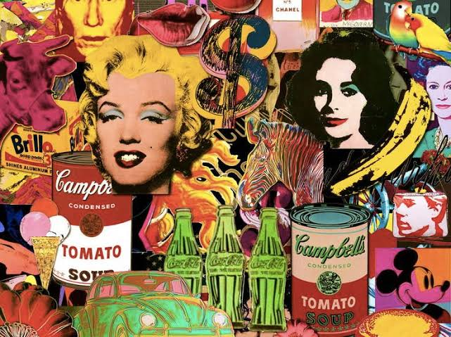

HISTORIA
¿QUÉ ES EL POP ART?
El Pop Art fue un movimiento artístico que surgió a mediados de la década de 1950 en Reino Unido y alcanzó su mayor desarrollo durante los años 60, especialmente en Estados Unidos.

CONTEXTO HISTÓRICO
Después de la Segunda Guerra Mundial, durante las décadas de 1950 y 1960, se produjo un fuerte crecimiento del consumo, la publicidad y los medios de comunicación. La televisión, las revistas, los cómics, el cine y los productos en serie comenzaron a ocupar un lugar cada vez más importante en la vida cotidiana.

UNA NUEVA CULTURA DE MASAS
CONSUMO MASIVO
Supermercados, envases y productos industriales.
PUBLICIDAD
Marcas, carteles y anuncios presentes en la vida cotidiana.
MEDIOS DE COMUNICACIÓN
Televisión, revistas, cine y prensa.
CULTURA POPULAR
Cómics, celebridades, música y entretenimiento.